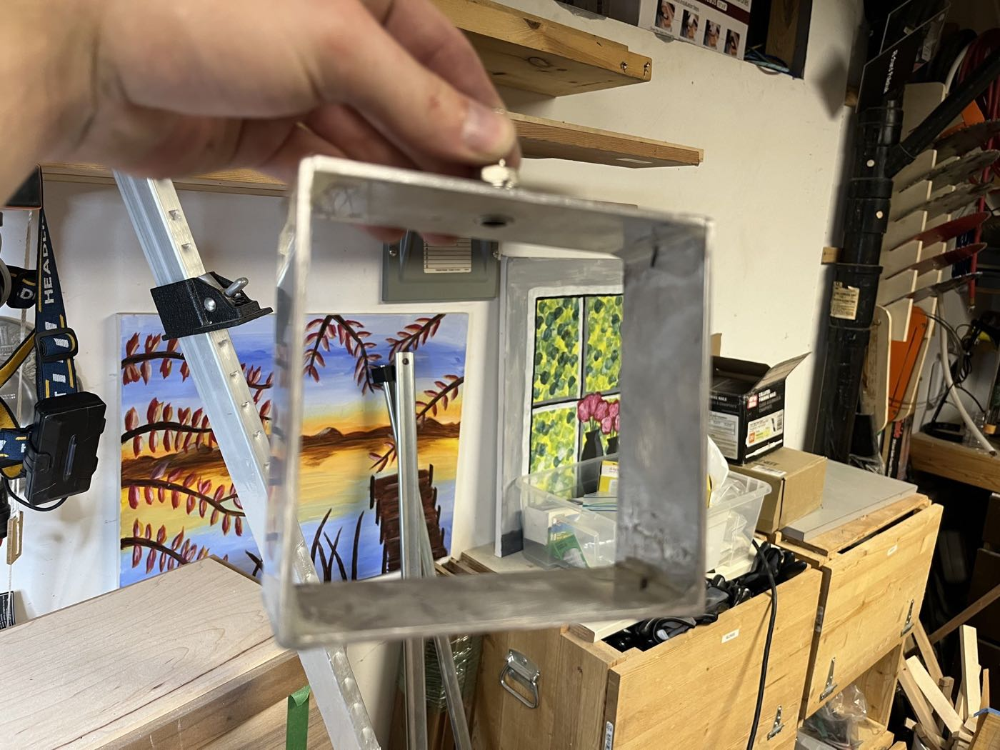
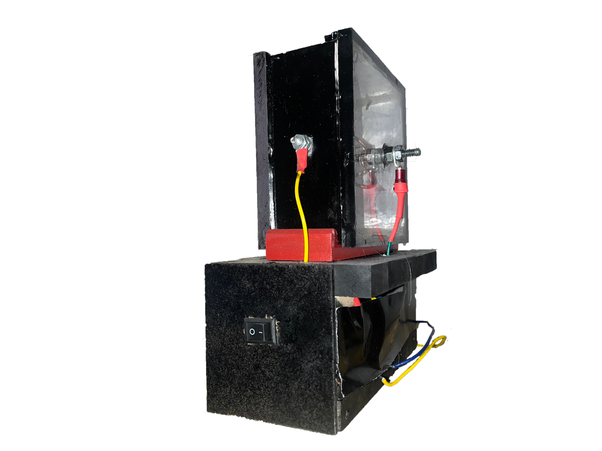

Overview
As a personal engineering project, I built a working demonstration fusion reactor, a Farnsworth fusor, using a custom-built high-voltage transformer and rectifier circuit to generate and sustain a stable plasma field.

The build
I engineered and built a vacuum chamber system that could hold −15 psi, creating the low-pressure environment needed for Inertial Electrostatic Confinement (IEC), where a high-voltage grid at the centre of the chamber accelerates ions inward toward each other.
I also isolated and shielded the high-voltage components to minimize electrical interference, prevent short circuits, and keep the system reliable and safe to operate.



Results
With this project, I achieved and maintained a controlled, low-level presumed fusion reaction. That said, this fusor likely produces extremely little fusion and is not a practical energy source. It also poses no serious radiation hazard at the voltages and pressures used, especially without a fusion fuel gas such as deuterium or tritium, which would vastly boost the reaction.